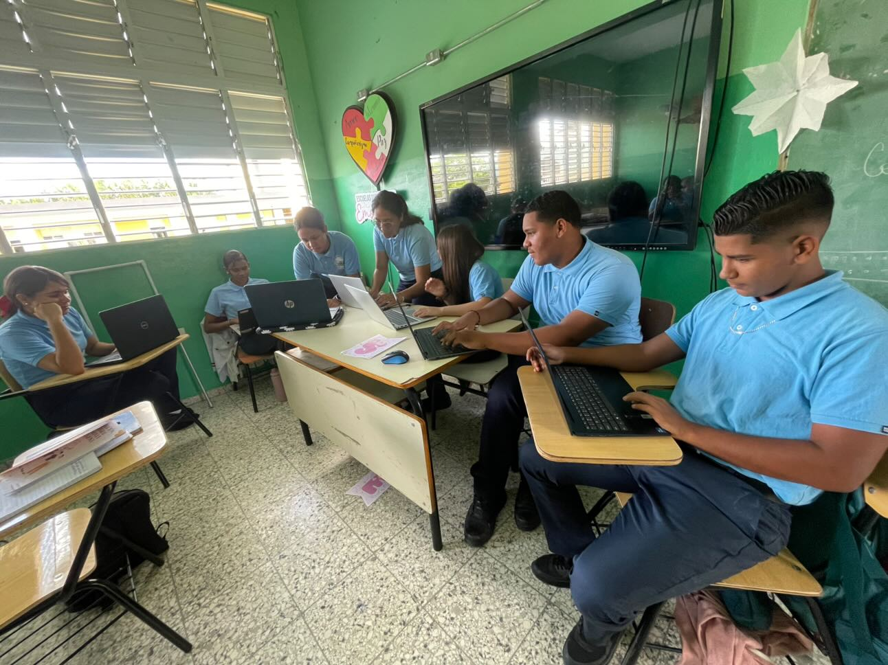

Nuestro Equipo de Analistas
Nuestro Equipo de Analistas
Conoce a nuestro equipo de analistas
Nuestro equipo de analistas de sistemas está conformado por jóvenes técnicos comprometidos con brindar soluciones eficientes a las necesidades tecnológicas de las empresas. Ellos se encargan de identificar requerimientos, analizar procesos y proponer mejoras innovadoras que sirvan de base para el desarrollo de sitios web funcionales y adaptados a cada cliente. Su enfoque combina el aprendizaje técnico con la realidad empresarial, garantizando un acompañamiento profesional en cada etapa del proyecto.
